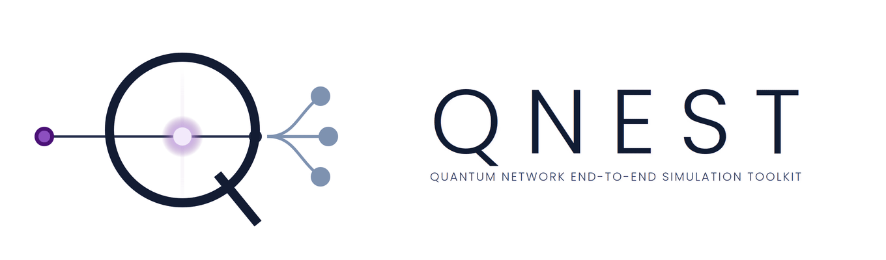
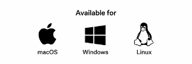
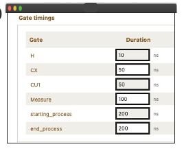

Circuit frameworks
Strong circuit design and compilation, but a single-device view. The interconnect isn't part of the model.
 Download
Download
Open source · Chalmers × University of Bristol

QNEST is a graphical toolkit for optical quantum data centers. Build a topology out of QPUs, switches and fiber, distribute a quantum circuit across it, schedule the remote gates, and run the whole thing on established tools — MQT Bench, pytket-dqc, Qoala and NetSquid — wired into one workflow, with the optical switching protocols and the interface on top.

The gap
Circuit frameworks, distributed compilers and network execution environments each solve one layer well. Nothing connects them, so the question that matters most — how the optical network changes what the application actually achieves — falls between them.
Strong circuit design and compilation, but a single-device view. The interconnect isn't part of the model.
Partition circuits across modules and allocate resources. On their own terms they work well, but the communication they assume stays abstract — nothing ties the partition back to real fiber.
Rigorous node scheduling and protocol-level modelling of quantum communication, with no notion of the circuit that produced the traffic.
Rather than reimplementing any layer, QNEST wires these tools into one workflow and adds what was missing: optical network design, switching protocols, and a graphical environment over the whole run.
Built on
Circuit scheduling and entanglement generation used to rest on simple in-house heuristics. They now rest on published, validated frameworks, so results carry the weight of the tools underneath them.
Workloads
Pick the benchmark circuit and the number of qubits for each simulation.
Distribution
Compiles and distributes the circuit over the quantum network you defined.
Scheduling
Node-level execution and scheduling for quantum internet nodes, from TU Delft. arXiv:2502.17296
Execution
Discrete-event simulation of the quantum network the schedule runs on.
The workflow
Each stage hands its output to the next one. Pick a stage to see what it does.
Circuits come from MQT Bench: choose the benchmark and the number of qubits for the run. Gate and process durations are set here too, so the timing model matches the hardware you have in mind.
Remote gate, crossing the optical link Local gate
The optical layer is a design object, not a hidden abstraction. Drag QPUs, beam splitters, switches, quantum memories and links onto the canvas and wire them together.


pytket-dqc compiles the circuit against the network you just defined and distributes it over the QPUs. What that costs becomes explicit: which gates turn remote, what they depend on, and how much entanglement they will consume.
Every cut edge becomes a remote gate, and every remote gate has to be paid for in entanglement.
The distributed circuit is passed to the QPUs and scheduled using the strategies defined in Qoala and NetSquid, rather than in-house heuristics. The result is drawn as an interactive Gantt chart and exported as standalone HTML.


Our switching protocols are applied on top, for either an all-photonic or a memory-assisted architecture, and the run plays out over the configured optical infrastructure. Results come back as detailed tables — every event, delay and resource in view.
A single remote gate, as the event engine sees it.
Capabilities
QPU placement, optical switching, quantum memories and links are all configurable objects, so architectural questions can be asked directly.
Qubit counts, coherence times, gate and readout errors, noise models, and calibration data fetched from named backends.
Circuits compiled and distributed across QPUs by an established tool, producing explicit remote-gate and entanglement requirements.
Gantt views tie local operations, remote gates and communication to one clock, scheduled by Qoala and NetSquid rather than in-house heuristics.
The switching protocols run over either an all-photonic or a memory-assisted design, so the two can be compared on identical workloads.
Application, compilation, scheduling and network stack in one place — physical-layer choices trace through to application results.
No command line required. The barrier to entry for distributed quantum computing research drops to installing an app.
Runs on ordinary Windows, macOS and Linux workstations, which keeps experiments easy to reproduce and share.
Readout
Five numbers that change when the network changes. Results are reported as detailed tables, so every event, delay and allocation stays visible — useful while a design is still being debugged, and easy to turn into plots once the numbers settle.
Architecture
From circuit specification and optical-network configuration through distributed compilation, scheduling, execution and performance evaluation — one path, one environment.

See it live
Come and drive it yourself. Change the topology, the noise or the scheduling policy, and watch the application-level numbers move.
Session
Demo D22
Date
Tuesday 22 September 2026
Time
11:00 – 12:30
Where
Pavilion 1, demo area
Times as published by the conference. Details on the ECOC demo focus page.
Get it
Free and open source. Pick your platform, or build from source.
Or run it from source
git clone https://github.com/qnest-toolkit/qnest.git
cd qnest
pip install -r requirements.txt
python src/main.pyPython 3.10 or newer.
The team
Chalmers University of Technology
University of Bristol
University of Bristol
University of Bristol
Chalmers University of Technology
Chalmers University of Technology
Department of Electrical Engineering, Chalmers University of Technology, Gothenburg, Sweden ·
Smart Internet Lab, University of Bristol, United Kingdom
elyasi@chalmers.se
Cite
@inproceedings{elyasi2026qnest,
title = {QNEST: A GUI-Driven Interactive Framework for End-to-End
Simulation of Optical Quantum Data Centers},
author = {Elyasi, Seyed Navid and Bahrani, Sima and Wang, Rui and
Simeonidou, Dimitra and Monti, Paolo and Lin, Rui},
booktitle = {European Conference on Optical Communication (ECOC)},
year = {2026}
}The demo paper is available as a PDF. The abstract was accepted for demonstration D22 at ECOC 2026 under the project's former name, GsOQDC.
Supported by
Supported by the Swedish Research Council (VR) and the UK EPSRC Integrated Quantum Networks Hub (EP/Z533208/1).